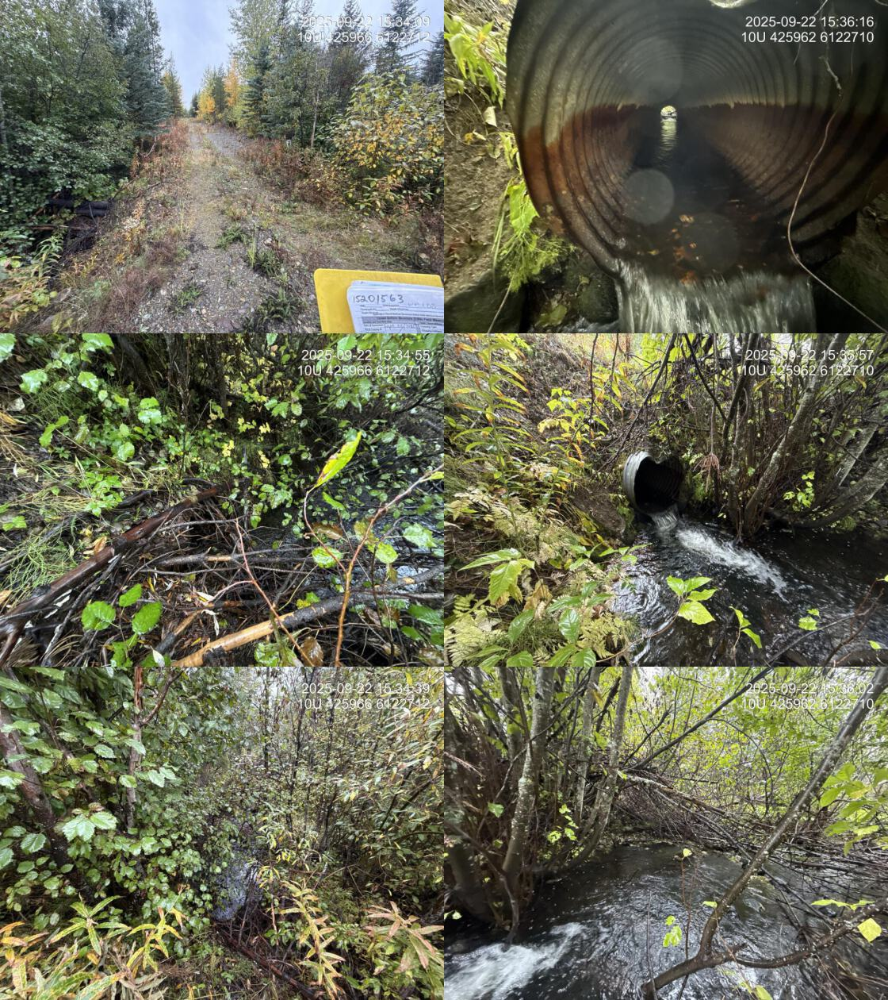
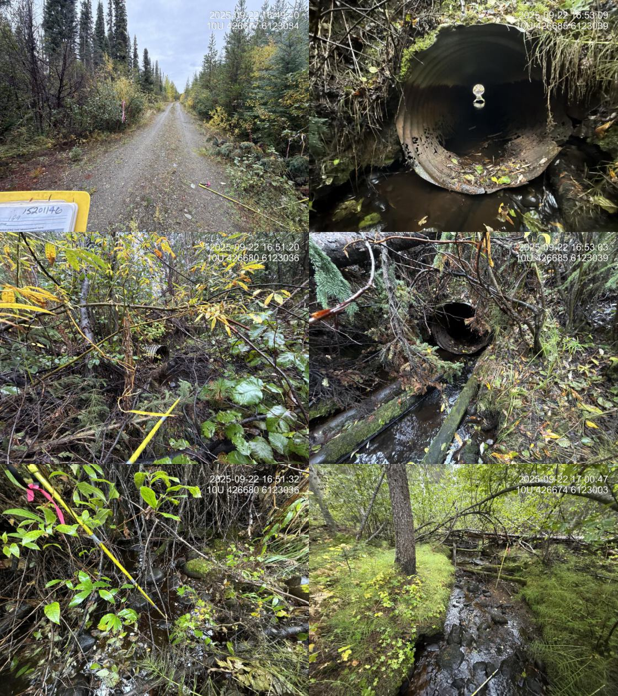
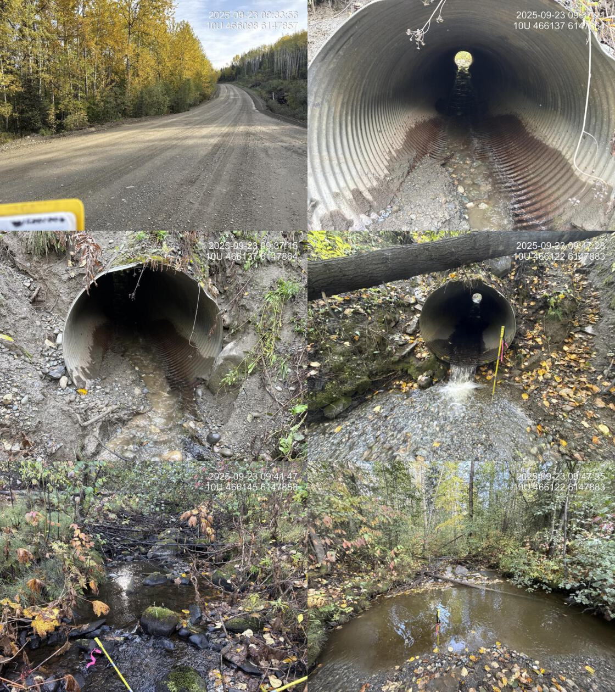
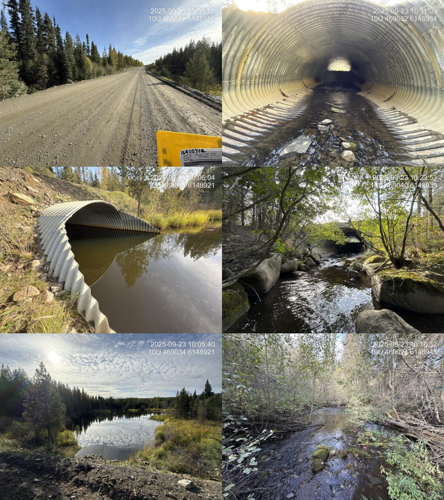
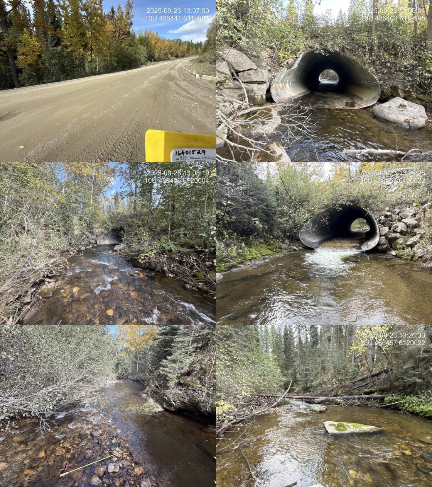
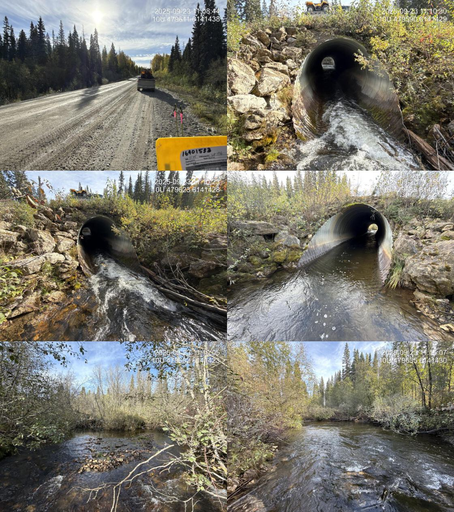
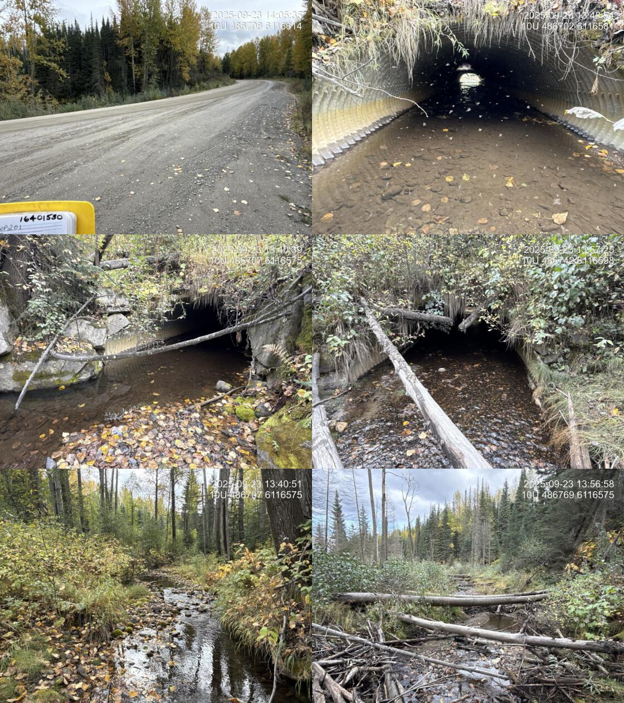

Appendix - Phase 1 Fish Passage Assessment Data and Photos
| Location and Stream Data |
|
Crossing Characteristics | – |
|---|---|---|---|
| Date | 2025-09-23 | Crossing Sub Type | Round Culvert |
| PSCIS ID | 6559 | Diameter (m) | 0.9 |
| External ID | – | Length (m) | 24 |
| Crew | AI | Embedded | No |
| UTM Zone | 10 | Depth Embedded (m) | – |
| Easting | 489950 | Resemble Channel | – |
| Northing | 6112363 | Backwatered | No |
| Stream | Tributary To Williston Reservoir | Percent Backwatered | – |
| Road | Finlay Community Connector | Fill Depth (m) | 2.5 |
| Road Tenure | Sekani R01883 83 | Outlet Drop (m) | 1.1 |
| Channel Width (m) | 1 | Outlet Pool Depth (m) | 0 |
| Stream Slope (%) | 1.5 | Inlet Drop | No |
| Beaver Activity | Yes | Slope (%) | 9 |
| Habitat Value | Low | Valley Fill | Deep Fill |
| Final score | 36 | Barrier Result | Barrier |
| Fix type | Replace Structure with Streambed Simulation CBS | Fix Span / Diameter | 3 |
| Comments: Wetland upstream. Stream was not flowing at time of assessment. Small channel downstream. Beaver grate devices on inlet and outlet | |||
| Photos: PSCIS ID 6559. From top left clockwise: Road/Site Card, Barrel, Outlet, Downstream, Upstream, Inlet. | |||

|
| Location and Stream Data |
|
Crossing Characteristics | – |
|---|---|---|---|
| Date | 2025-09-22 | Crossing Sub Type | Round Culvert |
| PSCIS ID | 203597 | Diameter (m) | 0.8 |
| External ID | 15201563 | Length (m) | 19 |
| Crew | AI | Embedded | No |
| UTM Zone | 10 | Depth Embedded (m) | – |
| Easting | 425959 | Resemble Channel | – |
| Northing | 6122703 | Backwatered | No |
| Stream | Tributary To Nation River | Percent Backwatered | – |
| Road | Thut 15000 | Fill Depth (m) | 1.5 |
| Road Tenure | Sekani R07214 8 | Outlet Drop (m) | 0.25 |
| Channel Width (m) | 2.5 | Outlet Pool Depth (m) | 0.5 |
| Stream Slope (%) | 2.5 | Inlet Drop | Yes |
| Beaver Activity | No | Slope (%) | 1 |
| Habitat Value | High | Valley Fill | Deep Fill |
| Final score | 29 | Barrier Result | Barrier |
| Fix type | Replace with New Open Bottom Structure | Fix Span / Diameter | 15 |
| Comments: High-quality stream with abundant gravels and cover, directly connected to the Nation River. Bull trout noted near the confluence. eDNA samples collected upstream and downstream of the crossing. This crossing is located on a road identified by BCTS as a candidate for potential deactivation. | |||
| Photos: PSCIS ID 203597. From top left clockwise: Road/Site Card, Barrel, Outlet, Downstream, Upstream, Inlet. | |||
|  |
| Location and Stream Data |
|
Crossing Characteristics | – |
|---|---|---|---|
| Date | 2025-09-22 | Crossing Sub Type | Round Culvert |
| PSCIS ID | 203598 | Diameter (m) | 0.8 |
| External ID | 15201146 | Length (m) | 10 |
| Crew | AI | Embedded | No |
| UTM Zone | 10 | Depth Embedded (m) | – |
| Easting | 426678 | Resemble Channel | – |
| Northing | 6123035 | Backwatered | No |
| Stream | Tributary To Nation River | Percent Backwatered | – |
| Road | Thut 15000 | Fill Depth (m) | 1.5 |
| Road Tenure | Sekani R07214 22 | Outlet Drop (m) | 0.2 |
| Channel Width (m) | 1.6 | Outlet Pool Depth (m) | 0.1 |
| Stream Slope (%) | 3.4 | Inlet Drop | No |
| Beaver Activity | No | Slope (%) | 2 |
| Habitat Value | Medium | Valley Fill | Deep Fill |
| Final score | 26 | Barrier Result | Barrier |
| Fix type | Replace Structure with Streambed Simulation CBS | Fix Span / Diameter | 3 |
| Comments: Small stream with short channel length before entering a large wetland area. Pockets of small gravel were present throughout. This crossing is located on a road identified by BCTS as a candidate for potential deactivation. | |||
| Photos: PSCIS ID 203598. From top left clockwise: Road/Site Card, Barrel, Outlet, Downstream, Upstream, Inlet. | |||
|  |
| Location and Stream Data |
|
Crossing Characteristics | – |
|---|---|---|---|
| Date | 2025-09-22 | Crossing Sub Type | Round Culvert |
| PSCIS ID | 203599 | Diameter (m) | 2.3 |
| External ID | 15202249 | Length (m) | 21 |
| Crew | AI | Embedded | No |
| UTM Zone | 10 | Depth Embedded (m) | – |
| Easting | 429213 | Resemble Channel | – |
| Northing | 6126036 | Backwatered | No |
| Stream | Tributary To Nation River | Percent Backwatered | – |
| Road | Thut 14000 | Fill Depth (m) | 1.2 |
| Road Tenure | MoF | Outlet Drop (m) | 0 |
| Channel Width (m) | 3 | Outlet Pool Depth (m) | 0.4 |
| Stream Slope (%) | 1.5 | Inlet Drop | No |
| Beaver Activity | No | Slope (%) | 2 |
| Habitat Value | Medium | Valley Fill | Deep Fill |
| Final score | 24 | Barrier Result | Barrier |
| Fix type | Replace with New Open Bottom Structure | Fix Span / Diameter | 15 |
| Comments: Wetland type habitat downstream with good habitat upstream with pockets of gravel and a wide channel. Culverts beginning to sag in the middle. No outlet drop. | |||
| Photos: PSCIS ID 203599. From top left clockwise: Road/Site Card, Barrel, Outlet, Downstream, Upstream, Inlet. | |||

|
| Location and Stream Data |
|
Crossing Characteristics | – |
|---|---|---|---|
| Date | 2025-09-22 | Crossing Sub Type | Round Culvert |
| PSCIS ID | 203600 | Diameter (m) | 2.35 |
| External ID | 15200985 | Length (m) | 15 |
| Crew | AI | Embedded | No |
| UTM Zone | 10 | Depth Embedded (m) | – |
| Easting | 458498 | Resemble Channel | – |
| Northing | 6137654 | Backwatered | No |
| Stream | Tributary To Nation River | Percent Backwatered | – |
| Road | Finlay-Nation FSR | Fill Depth (m) | 2 |
| Road Tenure | Sekani R09952 1 | Outlet Drop (m) | 0.15 |
| Channel Width (m) | 4.1 | Outlet Pool Depth (m) | 0.1 |
| Stream Slope (%) | 6 | Inlet Drop | Yes |
| Beaver Activity | No | Slope (%) | 4 |
| Habitat Value | High | Valley Fill | Deep Fill |
| Final score | 34 | Barrier Result | Barrier |
| Fix type | Replace with New Open Bottom Structure | Fix Span / Diameter | 15 |
| Comments: Large stream with abundant woody debris, pools, and gravels upstream. Outlet dropped minimally onto a boulder. | |||
| Photos: PSCIS ID 203600. From top left clockwise: Road/Site Card, Barrel, Outlet, Downstream, Upstream, Inlet. | |||

|
| Location and Stream Data |
|
Crossing Characteristics | – |
|---|---|---|---|
| Date | 2025-09-22 | Crossing Sub Type | Round Culvert |
| PSCIS ID | 203601 | Diameter (m) | 2.1 |
| External ID | 15201007 | Length (m) | 15 |
| Crew | AI | Embedded | No |
| UTM Zone | 10 | Depth Embedded (m) | – |
| Easting | 459772 | Resemble Channel | – |
| Northing | 6140076 | Backwatered | No |
| Stream | Tributary To Nation River | Percent Backwatered | – |
| Road | Finlay-Nation FSR | Fill Depth (m) | 1.3 |
| Road Tenure | Sekani R09952 1 | Outlet Drop (m) | 0 |
| Channel Width (m) | 3.5 | Outlet Pool Depth (m) | 0.1 |
| Stream Slope (%) | 4 | Inlet Drop | No |
| Beaver Activity | No | Slope (%) | 1 |
| Habitat Value | High | Valley Fill | Deep Fill |
| Final score | 24 | Barrier Result | Barrier |
| Fix type | Replace with New Open Bottom Structure | Fix Span / Diameter | 15 |
| Comments: Large stream with pools and gravels present upstream. Significant amounts of road fill had been graded into the channel. | |||
| Photos: PSCIS ID 203601. From top left clockwise: Road/Site Card, Barrel, Outlet, Downstream, Upstream, Inlet. | |||

|
| Location and Stream Data |
|
Crossing Characteristics | – |
|---|---|---|---|
| Date | 2025-09-23 | Crossing Sub Type | Round Culvert |
| PSCIS ID | 203602 | Diameter (m) | 1.55 |
| External ID | 15201006 | Length (m) | 23 |
| Crew | AI | Embedded | No |
| UTM Zone | 10 | Depth Embedded (m) | – |
| Easting | 466124 | Resemble Channel | – |
| Northing | 6147887 | Backwatered | No |
| Stream | Tributary To Nation River | Percent Backwatered | – |
| Road | Finlay-Nation FSR | Fill Depth (m) | 3.5 |
| Road Tenure | Sekani R01884 61 | Outlet Drop (m) | 0.25 |
| Channel Width (m) | 3.4 | Outlet Pool Depth (m) | 0.1 |
| Stream Slope (%) | 4 | Inlet Drop | No |
| Beaver Activity | No | Slope (%) | 5.5 |
| Habitat Value | High | Valley Fill | Deep Fill |
| Final score | 34 | Barrier Result | Barrier |
| Fix type | Replace with New Open Bottom Structure | Fix Span / Diameter | 16.5 |
| Comments: Large, low gradient, high value system. Significant amounts of road fill is eroding from the road prism into the stream on both sides of the FSR. Habitat confirmation and electrofishing or EDNA sampling is recommended. | |||
| Photos: PSCIS ID 203602. From top left clockwise: Road/Site Card, Barrel, Outlet, Downstream, Upstream, Inlet. | |||
|  |
| Location and Stream Data |
|
Crossing Characteristics | – |
|---|---|---|---|
| Date | 2025-09-23 | Crossing Sub Type | Oval Culvert |
| PSCIS ID | 203603 | Diameter (m) | 5.8 |
| External ID | 16400714 | Length (m) | 30 |
| Crew | AI | Embedded | No |
| UTM Zone | 10 | Depth Embedded (m) | – |
| Easting | 469020 | Resemble Channel | – |
| Northing | 6148916 | Backwatered | No |
| Stream | Tributary To Williston Reservoir | Percent Backwatered | – |
| Road | Finlay-Nation FSR | Fill Depth (m) | 2 |
| Road Tenure | MoF | Outlet Drop (m) | 0 |
| Channel Width (m) | 7.4 | Outlet Pool Depth (m) | 0.1 |
| Stream Slope (%) | 1.5 | Inlet Drop | No |
| Beaver Activity | Yes | Slope (%) | 2 |
| Habitat Value | High | Valley Fill | Deep Fill |
| Final score | 24 | Barrier Result | Barrier |
| Fix type | Replace with New Open Bottom Structure | Fix Span / Diameter | 15 |
| Comments: Very large stream with 2.5m high beaver dam located in the middle of the culvert backing up a massive wetland upstream. First passage is definitely hindered by the beaver dam however, the wetland it creates provides likely stable hydrology for the downstream system. | |||
| Photos: PSCIS ID 203603. From top left clockwise: Road/Site Card, Barrel, Outlet, Downstream, Upstream, Inlet. | |||
|  |
| Location and Stream Data |
|
Crossing Characteristics | – |
|---|---|---|---|
| Date | 2025-09-23 | Crossing Sub Type | Round Culvert |
| PSCIS ID | 203604 | Diameter (m) | 1 |
| External ID | 16401990 | Length (m) | 50 |
| Crew | AI | Embedded | No |
| UTM Zone | 10 | Depth Embedded (m) | – |
| Easting | 480204 | Resemble Channel | – |
| Northing | 6138985 | Backwatered | No |
| Stream | Tributary To Williston Reservoir | Percent Backwatered | – |
| Road | Finlay FSR | Fill Depth (m) | 7 |
| Road Tenure | Sekani R10040 25 | Outlet Drop (m) | 0 |
| Channel Width (m) | 10 | Outlet Pool Depth (m) | 1.5 |
| Stream Slope (%) | 0.5 | Inlet Drop | No |
| Beaver Activity | Yes | Slope (%) | 3 |
| Habitat Value | Medium | Valley Fill | Deep Fill |
| Final score | 32 | Barrier Result | Barrier |
| Fix type | Replace with New Open Bottom Structure | Fix Span / Diameter | 27 |
| Comments: Very large system with extremely undersized pipe that is submerged at the inlet with obvious beaver activity within the pipe itself. Upstream is a huge wetland, beaver-influenced area. Culvert slope estimated as the outlet pool is extremely deep. | |||
| Photos: PSCIS ID 203604. From top left clockwise: Road/Site Card, Barrel, Outlet, Downstream, Upstream, Inlet. | |||

|
| Location and Stream Data |
|
Crossing Characteristics | – |
|---|---|---|---|
| Date | 2025-09-23 | Crossing Sub Type | Round Culvert |
| PSCIS ID | 203605 | Diameter (m) | 3.9 |
| External ID | 16401519 | Length (m) | 46 |
| Crew | AI | Embedded | No |
| UTM Zone | 10 | Depth Embedded (m) | – |
| Easting | 486504 | Resemble Channel | – |
| Northing | 6124990 | Backwatered | No |
| Stream | Tributary To Williston Reservoir | Percent Backwatered | – |
| Road | Finlay FSR | Fill Depth (m) | 2.5 |
| Road Tenure | MoF | Outlet Drop (m) | 0.95 |
| Channel Width (m) | 6 | Outlet Pool Depth (m) | 0.5 |
| Stream Slope (%) | 2 | Inlet Drop | No |
| Beaver Activity | No | Slope (%) | 2 |
| Habitat Value | High | Valley Fill | Deep Fill |
| Final score | 37 | Barrier Result | Barrier |
| Fix type | Replace with New Open Bottom Structure | Fix Span / Diameter | 15 |
| Comments: High value habitat on very large system with pipe that has large outlet drop near 1m. Habitat confirmation and eDNA sampling conducted upstream and downstream of the crossing. | |||
| Photos: PSCIS ID 203605. From top left clockwise: Road/Site Card, Barrel, Outlet, Downstream, Upstream, Inlet. | |||

|
| Location and Stream Data |
|
Crossing Characteristics | – |
|---|---|---|---|
| Date | 2025-09-23 | Crossing Sub Type | Oval Culvert |
| PSCIS ID | 203606 | Diameter (m) | 4.6 |
| External ID | 16401529 | Length (m) | 35 |
| Crew | AI | Embedded | No |
| UTM Zone | 10 | Depth Embedded (m) | – |
| Easting | 486441 | Resemble Channel | – |
| Northing | 6119999 | Backwatered | No |
| Stream | Scovil Creek | Percent Backwatered | – |
| Road | Finlay FSR | Fill Depth (m) | 3 |
| Road Tenure | MoF | Outlet Drop (m) | 0.2 |
| Channel Width (m) | 9.3 | Outlet Pool Depth (m) | 0.7 |
| Stream Slope (%) | 2 | Inlet Drop | No |
| Beaver Activity | No | Slope (%) | 2 |
| Habitat Value | High | Valley Fill | Deep Fill |
| Final score | 32 | Barrier Result | Barrier |
| Fix type | Replace with New Open Bottom Structure | Fix Span / Diameter | 15 |
| Comments: Huge stream with abundant gravels and low gradient complex habitat upstream. Smaller outlet drop however pipe is somewhat undersized for the watershed. | |||
| Photos: PSCIS ID 203606. From top left clockwise: Road/Site Card, Barrel, Outlet, Downstream, Upstream, Inlet. | |||
|  |
| Location and Stream Data |
|
Crossing Characteristics | – |
|---|---|---|---|
| Date | 2025-09-23 | Crossing Sub Type | Round Culvert |
| PSCIS ID | 203607 | Diameter (m) | 1.65 |
| External ID | 16400428 | Length (m) | 16 |
| Crew | AI | Embedded | No |
| UTM Zone | 10 | Depth Embedded (m) | – |
| Easting | 488459 | Resemble Channel | – |
| Northing | 6112370 | Backwatered | No |
| Stream | Tributary To Williston Reservoir | Percent Backwatered | – |
| Road | Finl 19000 | Fill Depth (m) | 2 |
| Road Tenure | BCTS | Outlet Drop (m) | 0 |
| Channel Width (m) | 1.5 | Outlet Pool Depth (m) | 0 |
| Stream Slope (%) | 1.5 | Inlet Drop | Yes |
| Beaver Activity | No | Slope (%) | 2.5 |
| Habitat Value | Low | Valley Fill | Deep Fill |
| Final score | 18 | Barrier Result | Potential |
| Fix type | Replace Structure with Streambed Simulation CBS | Fix Span / Diameter | 3 |
| Comments: Dry, poorly defined channel. Unlikely fish habitat. | |||
| Photos: PSCIS ID 203607. From top left clockwise: Road/Site Card, Barrel, Outlet, Downstream, Upstream, Inlet. | |||

|
| Location and Stream Data |
|
Crossing Characteristics | – |
|---|---|---|---|
| Date | 2025-09-23 | Crossing Sub Type | Round Culvert |
| PSCIS ID | 203608 | Diameter (m) | 2.6 |
| External ID | 16491533 | Length (m) | 35 |
| Crew | AI | Embedded | No |
| UTM Zone | 10 | Depth Embedded (m) | – |
| Easting | 479612 | Resemble Channel | – |
| Northing | 6141425 | Backwatered | Yes |
| Stream | Dastaiga Creek | Percent Backwatered | 50 |
| Road | Finlay FSR | Fill Depth (m) | 1.6 |
| Road Tenure | Sekani R01886 140 | Outlet Drop (m) | 0 |
| Channel Width (m) | 8 | Outlet Pool Depth (m) | 0.25 |
| Stream Slope (%) | 3 | Inlet Drop | Yes |
| Beaver Activity | Yes | Slope (%) | 1.5 |
| Habitat Value | Medium | Valley Fill | Deep Fill |
| Final score | 27 | Barrier Result | Barrier |
| Fix type | Replace with New Open Bottom Structure | Fix Span / Diameter | 15 |
| Comments: Very large stream with a beaver dam located 30m upstream of the crossing. No outlet drop, but culvert is well undersized for the watershed. Stream width and gradient are rough estimates. | |||
| Photos: PSCIS ID 203608. From top left clockwise: Road/Site Card, Barrel, Outlet, Downstream, Upstream, Inlet. | |||
|  |
| Location and Stream Data |
|
Crossing Characteristics | – |
|---|---|---|---|
| Date | 2025-09-23 | Crossing Sub Type | Round Culvert |
| PSCIS ID | 203609 | Diameter (m) | 3.5 |
| External ID | 16401530 | Length (m) | 30 |
| Crew | AI | Embedded | Yes |
| UTM Zone | 10 | Depth Embedded (m) | 0.27 |
| Easting | 486707 | Resemble Channel | Yes |
| Northing | 6116611 | Backwatered | No |
| Stream | Tributary To Williston Reservoir | Percent Backwatered | – |
| Road | Finlay FSR | Fill Depth (m) | 3 |
| Road Tenure | Sekani R06855 33 | Outlet Drop (m) | 0 |
| Channel Width (m) | 3.7 | Outlet Pool Depth (m) | 0.03 |
| Stream Slope (%) | 1 | Inlet Drop | No |
| Beaver Activity | No | Slope (%) | 0.5 |
| Habitat Value | High | Valley Fill | Deep Fill |
| Final score | 14 | Barrier Result | Passable |
| Fix type | – | Fix Span / Diameter | – |
| Comments: Low gradient, larger system with abundant gravel. Culvert is fully embedded. Culvert length estimated based on photos. | |||
| Photos: PSCIS ID 203609. From top left clockwise: Road/Site Card, Barrel, Outlet, Downstream, Upstream, Inlet. | |||
|  |
| Location and Stream Data |
|
Crossing Characteristics | – |
|---|---|---|---|
| Date | 2025-09-23 | Crossing Sub Type | Round Culvert |
| PSCIS ID | 203610 | Diameter (m) | 2.9 |
| External ID | 16401547 | Length (m) | 30 |
| Crew | AI | Embedded | Yes |
| UTM Zone | 10 | Depth Embedded (m) | 0.6 |
| Easting | 476482 | Resemble Channel | yes |
| Northing | 6147549 | Backwatered | Yes |
| Stream | Tributary To Williston Reservoir | Percent Backwatered | 50 |
| Road | Finlay FSR | Fill Depth (m) | 2 |
| Road Tenure | Sekani R10040 19 | Outlet Drop (m) | 0 |
| Channel Width (m) | 2 | Outlet Pool Depth (m) | 0.1 |
| Stream Slope (%) | 0 | Inlet Drop | Yes |
| Beaver Activity | Yes | Slope (%) | 1 |
| Habitat Value | Medium | Valley Fill | Deep Fill |
| Final score | 11 | Barrier Result | Passable |
| Fix type | – | Fix Span / Diameter | – |
| Comments: Beaver dam located 1m upstream from the inlet. Pipe is embedded and the top 10m is backwatered. Smaller stream with some pockets of gravel and decent flow – although there were heavy rains yesterday. | |||
| Photos: PSCIS ID 203610. From top left clockwise: Road/Site Card, Barrel, Outlet, Downstream, Upstream, Inlet. | |||

|
| Location and Stream Data |
|
Crossing Characteristics | – |
|---|---|---|---|
| Date | 2025-09-23 | Crossing Sub Type | Bridge |
| PSCIS ID | 203611 | Diameter (m) | 18.3 |
| External ID | 16401393 | Length (m) | 5 |
| Crew | AI | Embedded | No |
| UTM Zone | 10 | Depth Embedded (m) | – |
| Easting | 486421 | Resemble Channel | – |
| Northing | 6124806 | Backwatered | No |
| Stream | Tributary To Williston Reservoir | Percent Backwatered | – |
| Road | Modeste FSR | Fill Depth (m) | – |
| Road Tenure | MoF | Outlet Drop (m) | 0 |
| Channel Width (m) | 0 | Outlet Pool Depth (m) | 0 |
| Stream Slope (%) | 0 | Inlet Drop | No |
| Beaver Activity | No | Slope (%) | 0 |
| Habitat Value | – | Valley Fill | – |
| Final score | 10 | Barrier Result | Passable |
| Fix type | – | Fix Span / Diameter | – |
| Comments: Bridge | |||
| Photos: PSCIS ID 203611. From top left clockwise: Road/Site Card, Barrel, Outlet, Downstream, Upstream, Inlet. | |||

|